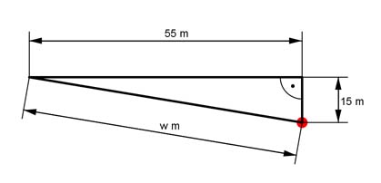

Pythagoras Aufgabe 12 Bei einem Wettkampf wird ein Ball so geworfen, dass er 15 m neben der 55 m Marke auftrifft. Wie groß war die Wurfweite w in m tatsächlich?  w² = 15² m² + 55² m² = 3 250 m² |√ w = 3 250 m² = 57 m